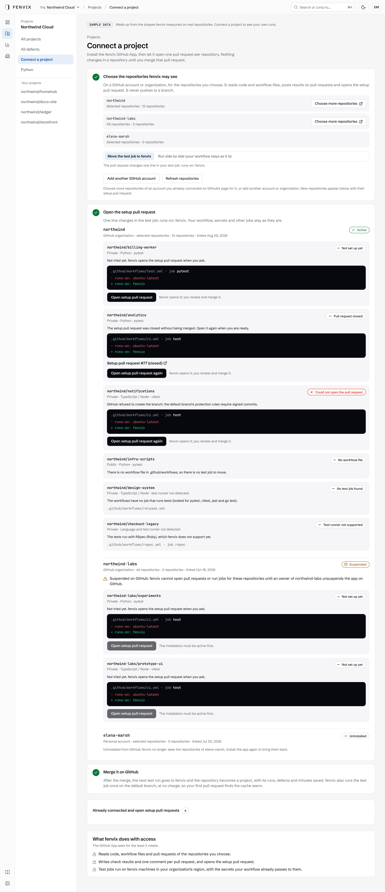
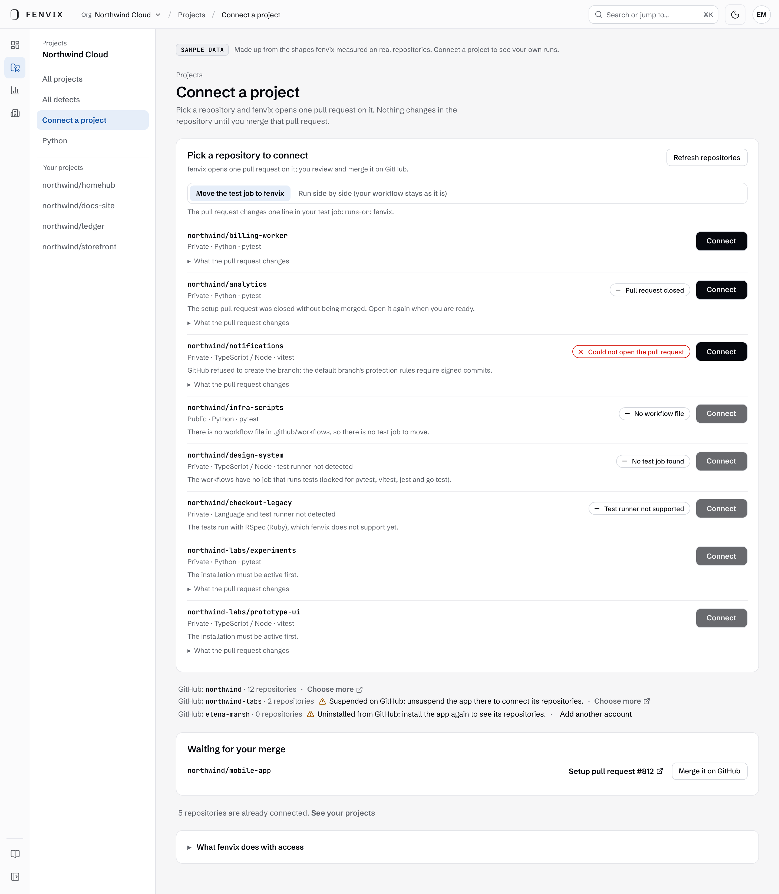
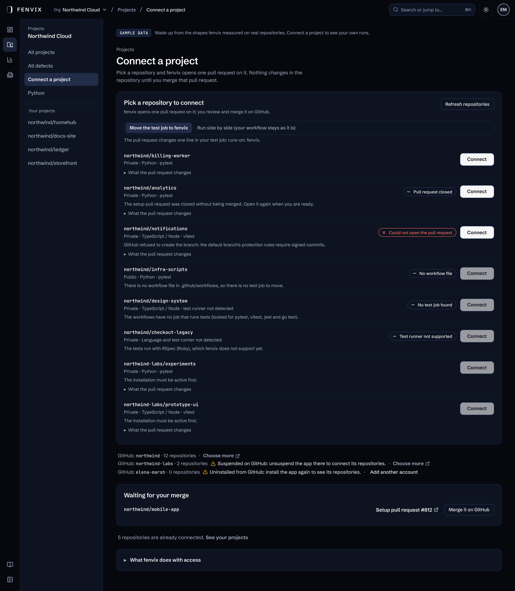
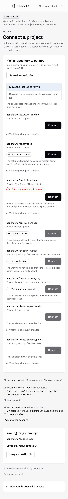
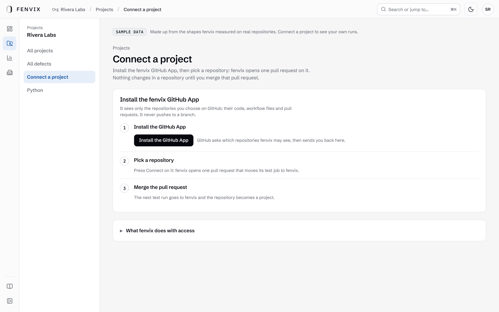
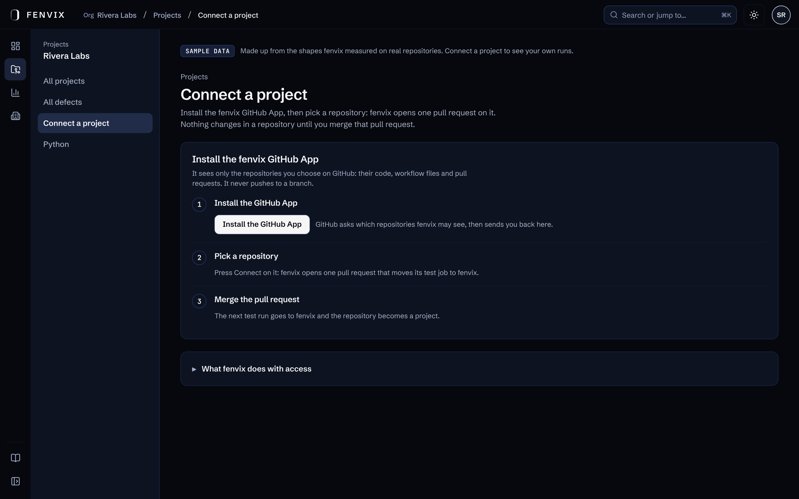
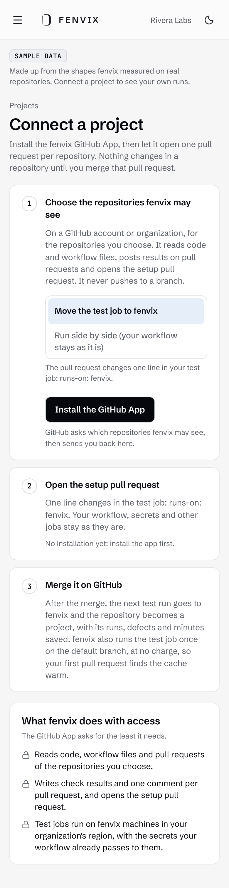
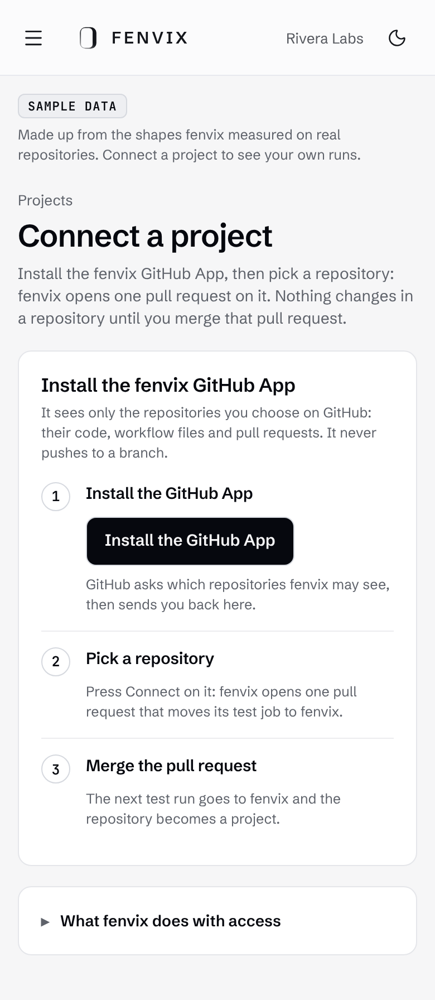

Connect: before / after
The Connect page rebuilt around connecting a new repository. Mock backend, full-length captures at deviceScaleFactor: 2. Before is origin/main 3fc67ec; after is branch claude/connect-redesign. 0 console errors in all 12 captures.
- No checklist once GitHub is connectedThe 1-2-3 steps stay only for the first install.
- One list: what you can connectEach repository with its language, test runner, a state pill when not ready, and Connect.
- Connected repositories leave the pageOne line links to your projects; open pull requests sit under Waiting for your merge.
- Installations shrink to linesGitHub account, repository count, Choose more, Add another account; suspended or uninstalled as a short warning.
State B · GitHub App installed (the founder's case)
Northwind Cloud: installations active, suspended and uninstalled; repositories in every onboarding state.
1440 × 900 · light


1440 × 900 · dark


390 × 844 · light

State A · No GitHub App yet (first time)
A new organization made through the email sign-in: nothing installed.
1440 × 900 · light


1440 × 900 · dark


390 × 844 · light

